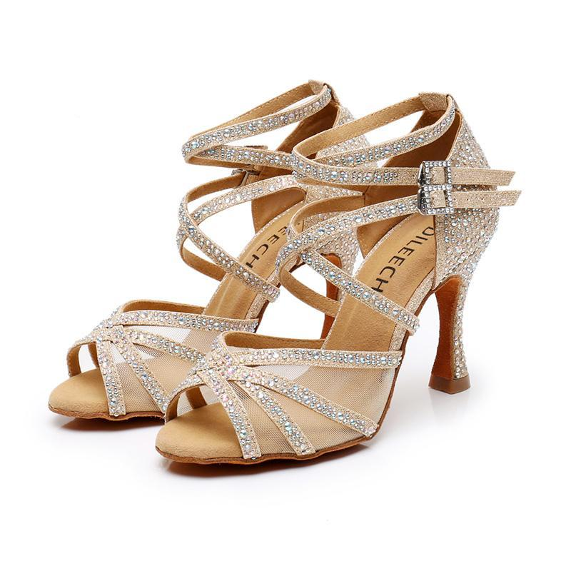

Silver - Women's Latin Dance Shoes
$227 CAD
Mesh and sparkly silver dance shoes are a great mix of style and comfort. The mesh makes them breathable and easy to move in, while the sparkly silver adds a fun, eye-catching look.
These shoes have an adjustable ankle straps and a steady heel for extra support, making them perfect for dancing confidently.
Whether for Latin, ballroom, or other types of dance, they let you look stylish while staying comfortable during fast, detailed footwork. Mesh and sparkly silver shoes are a great choice if you want to stand out on the dance floor.